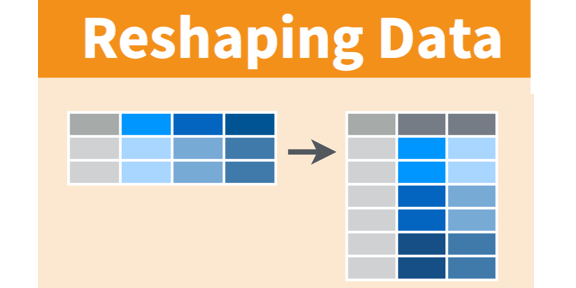
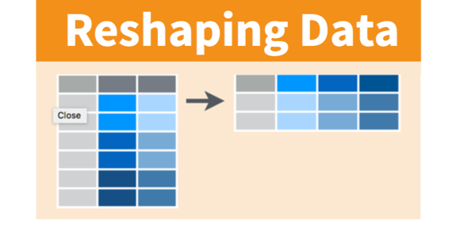
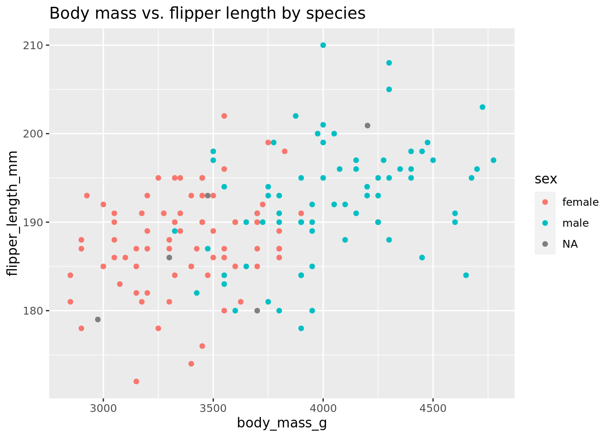
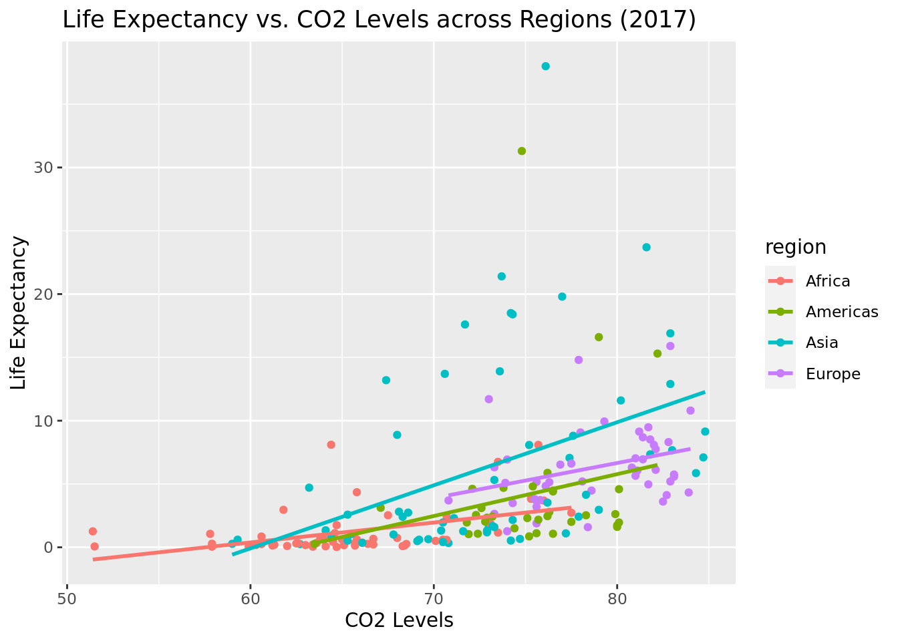
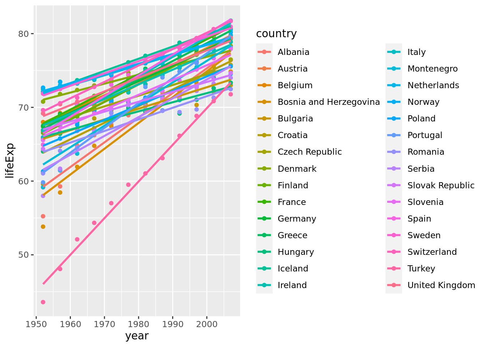
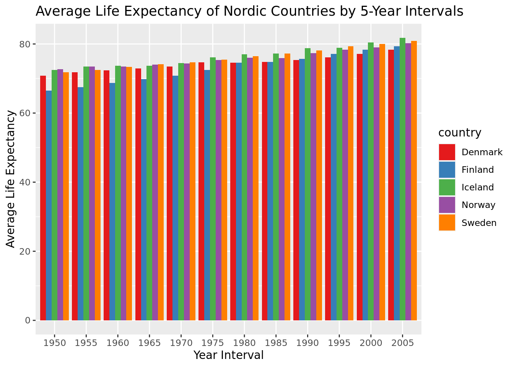

Chapter 4 Data wrangling and tidy data

4.1 Packages required
The following packages are required. If you need to go back and check how installing a package is done see the section 3.5(#installpackages).
library(dplyr).
library(ggplot2).
library(readr).
library(tidyr).
library(broom).
library(palmerpenguins).
This chapter will introduce you to data wrangling with an emphasis on the dplyr package along with other helpful functions. You will see how powerful wrangling can be and how it can be like a magic wand to transform data into your specific needs. The key functions include but are not limited to:
4.2 The pipe and very useful functions
The overarching function which makes us able to combine functions and subsetting is the pipe. And what is a pipe? Pipes are a neat way to tie together several dataframes/functions into a chain of actions. It makes coding easier to understand and is therefore a better style of coding. It looks like this %>%. For instance taking the mean of the first two rows of the my_df dataframe can be done like so:
my_df[1:2,"Grades"] %>% mean. Learning to use the pipe to your advantage is learning to code. Luckily it all comes naturally when working with the following functions:
left_join()merge two data frames together using a key column. This function (along with its cousin functionsright_join()andjoin()etc.) is the bread and butter of working with many data types that needs to be merged and analysed. For example
library(dplyr)
my_data <- data.frame(
names = c("Villy", "Søren", "Karl", "Benny", "Siri"),
Grades = c(100, 20, 40, 30, 60),
gender = c("boy", "boy", "boy", "boy", "girl"))
other_data <- data.frame(gender = c("boy", "girl"), description = c("Male", "Female"))
left_joined_data <- left_join(my_data, other_data, by = "gender")
left_joined_data## names Grades gender description
## 1 Villy 100 boy Male
## 2 Søren 20 boy Male
## 3 Karl 40 boy Male
## 4 Benny 30 boy Male
## 5 Siri 60 girl Femalemutate()construct/reconstruct a column using a newly defined column name. This function is useful to generate a new columns that modify existing ones often using a conditional to do so. Now using the same data as above:
mutated_data <- my_data %>%
mutate(Grades_scaled = Grades / max(Grades))glimpse()take a sneak peak at a dataset. Useful for getting the dimensions of the data and the type of data contained in the columns. Now look at the newly constructed column
glimpse(mutated_data)## Rows: 5
## Columns: 4
## $ names <chr> "Villy", "Søren", "Karl", "Benny", "Siri"
## $ Grades <dbl> 100, 20, 40, 30, 60
## $ gender <chr> "boy", "boy", "boy", "boy", "girl"
## $ Grades_scaled <dbl> 1.0, 0.2, 0.4, 0.3, 0.6count()counts the n of each unique value in a column. Usefull to combine with mutate to see the counts of the newly constructed column.
counted_data <- count(my_data, gender)
counted_data## gender n
## 1 boy 4
## 2 girl 1arrange()reorder the rows of a dataframe. For example, sort the rows of a dataset in descending order of the column height.
arranged_data <- arrange(my_data, desc(Grades))
arranged_data## names Grades gender
## 1 Villy 100 boy
## 2 Siri 60 girl
## 3 Karl 40 boy
## 4 Benny 30 boy
## 5 Søren 20 boyselect()select columns using indexing or strings. e.g.my_df %>% select("names").filter()the rows of a dataframe based on a filter, e.g. thresholds. It is similar to the example shown in the introduction, where we used old school filtering on my_df dataframemy_df[my_df$names %in% c("Karl","Villy"),]. Using the filter function and pipes you can do it like this:my_df %>% filter(names %in% c("Karl","Villy")).summarise()a dataframe using one or more of its columns/variables with a summary statistic. Such examples could be the median or the mean and an example look like this:my_df %>% summarise(mean = mean(Grades)). This function can be very powerful when combined with thegroup_byfunction.group_by()is a dplyr way of grouping rows, it is a way to assign different rows to a group and do statistical reporting on every specific group in the data set. An example require us to add a third column tomy_dflike this:my_df <- my_df %>% mutate(gender = c("boy","boy","boy","boy","girl")). Now using this newmy_dfwe cangroup_byon the gender column and calculate the median on this group:
my_df %>%
group_by(gender) %>%
summarise(median(Grades)) ## # A tibble: 2 × 2
## gender `median(Grades)`
## <chr> <dbl>
## 1 boy 35
## 2 girl 60 
- Sometimes you are interest in changing the format of the data, i.e. reshaping the way it is represented in R. Like in the two figures above, you sometimes want to go from a “long” format to a “wide” or vice versa. To do so we use the R functions
pivot_longer()andpivot_wider()This will come in handy when you start to do modelling tomorrow. But for now, we will first understand howpivot_longer()works.
For this we will use the left_joined_data from above. First lets look at the data again:
head(left_joined_data)
df_wide <- pivot_wider(left_joined_data, names_from = names, values_from = Grades)
print(df_wide)This results in a dataset where each unique value in the “names” column becomes a separate column, and the corresponding “Grades” values are filled into those columns. The “gender” and “description” columns remain unchanged. Keep in mind that we lose some of the information available in the left_joined_data.
Lets try to revert the df_wide to long format again.
df_long_again <- pivot_longer(df_wide, cols = -c(gender, description), names_to = "names", values_to = "Grades").

4.3 Penguins!
Now we are going to use the functions described above on the penguin dataset. The data has been collected by Dr. Kirstin Gorman at the Palmer station, Antartica LTER. So real data collected for a purpose and published in a scientific journal.
library(palmerpenguins)
4.3.1 Your turn - Look at the dataset
Now look at the dataset using glimpse() in the console, now try to look at the dataset using
str() again you get information about the dataset. Please use one minute and compare the two methods to look at structure of the data.
Which one do you prefer and why?
Exercise 2.
- You can input several grouping variables into
group_by(var1,var2). Now use this information to output the mean length of the flippers for species across islands, meaning for e.g. Adelie penguins you will have three values. Remember thatmeancan handle NA values in your dataset, you just have to tell it to do so.
4.4 More handy functions
Often, we are interested in a summary of information for many columns at once and thus we are not only looking at e.g. flipper_length across species and islands, but rather all measurements across species and islands. The reason to this more thorough data description is to gain better insight into the dataset. Better insights leads to better scientific questions.
across()is a function that makes it easy to transform/summarise multiple columns. It needs a function to apply to these columns, that could bemedianormean(). Also, it is often combined with functions likemutate()andsummarise()to generate new columns using transformation on existing columns. Furthermore, it is also often combined with functions that informsacross()on which columns to look at. For instance,across()can be combined withstarts_with()andwhere(). OK enough text, now to an example that makes sense. Again looking at the penguins dataset, lets try to combine these functions to get an intuition about how they work together:
penguins %>%
group_by(species,island) %>%
summarize(across(starts_with("bill"),~mean(., na.rm = TRUE)))## `summarise()` has grouped output by 'species'. You can override using the
## `.groups` argument.## # A tibble: 5 × 4
## # Groups: species [3]
## species island bill_length_mm bill_depth_mm
## <fct> <fct> <dbl> <dbl>
## 1 Adelie Biscoe 39.0 18.4
## 2 Adelie Dream 38.5 18.3
## 3 Adelie Torgersen 39.0 18.4
## 4 Chinstrap Dream 48.8 18.4
## 5 Gentoo Biscoe 47.5 15.0You can see that this gives a nice overview of the bill lengths across the species across the islands. One takeaway one this would be that the difference in bill length seems less influenced by islands and more influenced by species.
4.5 One way to deal with missing values
data <- penguins
sum(is.na(penguins))## [1] 19The penguins dataset is not perfect. BUT, we can wave our magic data wand to impute the missing values. What is imputation? it is best-guess construction, meaning we already know a lot about the penguins so we fill in the missing values with guesses. It is not cheating, it is done all the time in research.
# rename the dataset so we can modify the data frame without having to reload the data
data <- penguins
# how many missing in the flipper length?
sum(is.na(data$flipper_length_mm))## [1] 2Now - waving the magic data wand - we impute
# Impute missing values with mean imputation for the 'flipper_length_mm' column
data_imputed <- data %>%
mutate(flipper_length_mm = ifelse(is.na(flipper_length_mm),
mean(flipper_length_mm, na.rm = TRUE),
flipper_length_mm))What is going on? Here we are being aided by the
ifelse function which ask questions about the data, we pair this function with mutate and reconstruct the flipper_length_mm imputing missing values.
Typically though, we have a lot of variables that needs to be imputed and
even though we hate to admit it, we know that we are lazy, and laziness is the super fuel of the efficient programmer!
So below is a way to to the same, but instead of focusing on a specific column we use the
mutate_if function to find all numeric columns in the dataset and do the same.
# Impute missing values with mean imputation for numeric columns
data_imputed <- data %>%
mutate_if(is.numeric, ~ifelse(is.na(.), mean(., na.rm = TRUE), .))4.5.1 Your turn
Exercise 3.
Sometimes the variables you need impute are not just continuous variables like height or flipper length in mm. So what do we do then? Well, we guess, but instead of using the information in the column you want to impute, you use supplementary information in the adjacent columns. How can we do that? Well consider the column in the penguins data set which contains the gender of the penguins. We would not gain anything from replacing NA values with the mean of that column. In the natural world, species are often sexually dimorphic, which are fancy words for differences in size/color between sexes. We want to leverage this information to guess at the gender. So we can guess based on body size because we know sexes often differ in size. But first, we need to check if that is true for penguins.
- So assuming you have the data set called data_imputed made above where all the continuous measurements have been mean imputed you can address the missing sex problem for the Adelie species.
Maybe you can learn something about sexual dimorphism from these plot and table?
table(is.na(data_imputed$sex),data_imputed$species) ##
## Adelie Chinstrap Gentoo
## FALSE 146 68 119
## TRUE 6 0 5 ggplot(data_imputed %>% filter(species %in% "Adelie"), aes(x = body_mass_g, y = flipper_length_mm, color = sex)) +
geom_point() +
labs(title = "Body mass vs. flipper length by species")
4.6 Back to the future
Lets play a little more with grouping in the penguins dataset. Lets try to ignore the missing values for now instead of imputing them.
4.6.1 Get summary of a statistic, but grouping on another variable
penguins %>%
group_by(species) %>%
summarize(
mean_bm =mean(body_mass_g, na.rm=T),
sd_bm =sd(body_mass_g, na.rm=T),
n = n()
)## # A tibble: 3 × 4
## species mean_bm sd_bm n
## <fct> <dbl> <dbl> <int>
## 1 Adelie 3701. 459. 152
## 2 Chinstrap 3733. 384. 68
## 3 Gentoo 5076. 504. 1244.6.2 Grouping on more than one variable
penguins %>%
group_by(species, sex) %>%
summarize(
mean_bm =mean(body_mass_g, na.rm=T),
sd_bm =sd(body_mass_g, na.rm=T),
n = n()
)## `summarise()` has grouped output by 'species'. You can override using the
## `.groups` argument.## # A tibble: 8 × 5
## # Groups: species [3]
## species sex mean_bm sd_bm n
## <fct> <fct> <dbl> <dbl> <int>
## 1 Adelie female 3369. 269. 73
## 2 Adelie male 4043. 347. 73
## 3 Adelie <NA> 3540 477. 6
## 4 Chinstrap female 3527. 285. 34
## 5 Chinstrap male 3939. 362. 34
## 6 Gentoo female 4680. 282. 58
## 7 Gentoo male 5485. 313. 61
## 8 Gentoo <NA> 4588. 338. 54.6.3 Remove NAs sex variable and sort by mean body size
penguins %>%
filter(!is.na(sex)) %>%
group_by(species, sex) %>%
summarize(
mean_bm =mean(body_mass_g, na.rm=T),
sd_bm =sd(body_mass_g, na.rm=T),
n = n()
)%>%
arrange(desc(mean_bm))## `summarise()` has grouped output by 'species'. You can override using the
## `.groups` argument.## # A tibble: 6 × 5
## # Groups: species [3]
## species sex mean_bm sd_bm n
## <fct> <fct> <dbl> <dbl> <int>
## 1 Gentoo male 5485. 313. 61
## 2 Gentoo female 4680. 282. 58
## 3 Adelie male 4043. 347. 73
## 4 Chinstrap male 3939. 362. 34
## 5 Chinstrap female 3527. 285. 34
## 6 Adelie female 3369. 269. 73Great! That was the fast introduction to penguins. Think about what you learned from this. The meta-information that you gather from doing exercises as the ones above is the real magic. Therefore, as always, look at your data in different ways before diving in.
4.7 Lets look at a dataset from the internet
Open this link in a new tab by copy-pasting and save it to your computer using right-click (https://raw.githubusercontent.com/zief0002/miniature-garbanzo/main/data/gapminder.csv). Save it as “gapminder2017”.
4.7.1 comma separated (csv)
try reading it in using read csv, the file ending is automatically put on there, so even though you did not name it gapminder2017.csv, that is the name it will get.
# read csv can create in comma-separated files, read.table can be used to read in tab separated tables
# BUT in general, you just need to specify what separated your columns and if the data has a header
gapminder2017 <-read.csv("~/241023_phdcourse/data/gapminder2017.csv")
glimpse(gapminder2017)## Rows: 193
## Columns: 8
## $ country <chr> "Afghanistan", "Albania", "Algeria", "Andorra", "Angola",…
## $ region <chr> "Asia", "Europe", "Africa", "Europe", "Africa", "Americas…
## $ income <dbl> 2.03, 13.30, 11.60, 58.30, 6.93, 21.00, 22.70, 12.70, 49.…
## $ income_level <chr> "Level 1", "Level 3", "Level 3", "Level 4", "Level 2", "L…
## $ life_exp <dbl> 62.7, 78.4, 76.0, 82.1, 64.6, 76.2, 76.5, 75.6, 82.9, 82.…
## $ co2 <dbl> 0.254, 1.590, 3.690, 6.120, 1.120, 5.880, 4.410, 1.890, 1…
## $ co2_change <chr> "increase", "increase", "increase", "decrease", "decrease…
## $ population <dbl> 37.2000, 2.8800, 42.2000, 0.0770, 30.8000, 0.0963, 44.400…Plotting is useful for understanding your data, in this case, we can plot the life expectancy and co2 across regions. We will back to plotting much more so dont worry if you dont understand it all right now.
ggplot(gapminder2017, aes(x = life_exp, y = co2, color = region)) +
geom_point() + # Add points for each data point
geom_smooth(method = "lm", se = FALSE) + # Add linear trendlines without confidence bands
labs(title = "Life Expectancy vs. CO2 Levels across Regions (2017)", x = "CO2 Levels", y = "Life Expectancy")## `geom_smooth()` using formula = 'y ~ x'
However, what we want is not a point estimate for the year 2017, we want the change in life expectancy over time across regions, but not per year. We want to do it per 5 years to remove the uncertainty given by yearly measurements also we only want to look at the Nordic countries. The full dataset for gapminder is available in the R package gapminder install this if you have not done so already.
For an overview of the data, look at this plot
library(gapminder)
# For Denmark see the trend in life expectancy
gapminder %>% filter(continent %in% "Europe") %>%
ggplot(., aes(x = year, y = lifeExp, color = country)) +
geom_point() +
geom_smooth(method = "lm", se = FALSE) # Add linear trendlines without confidence bands## `geom_smooth()` using formula = 'y ~ x'
4.7.2 Construct new date variable and look at life expectancy
Often, we are given raw data and we need to invent a new feature that incorporates the flaws of our data while still being useful. For example, yearly estimates might not be available and thus we want to contruct a 5 year period increase to remove some of uncertainty introduced by this effect.
# Filter data for Nordic countries in the 'gapminder' dataset
nordic_countries <- c("Denmark", "Finland", "Iceland", "Norway", "Sweden")
nordic_data <- gapminder %>% filter(country %in% nordic_countries)
# Create a date interval of five years
nordic_data <- nordic_data %>%
mutate(year_interval = year %/% 5 * 5) # Create intervals of 5 years
# Summarize life expectancy for the Nordic countries within the 5-year intervals
summary <- nordic_data %>%
group_by(country, year_interval) %>%
summarise(avg_life_expectancy = mean(lifeExp, na.rm = TRUE))## `summarise()` has grouped output by 'country'. You can override using the
## `.groups` argument.# Show the summarized data
summary## # A tibble: 60 × 3
## # Groups: country [5]
## country year_interval avg_life_expectancy
## <fct> <dbl> <dbl>
## 1 Denmark 1950 70.8
## 2 Denmark 1955 71.8
## 3 Denmark 1960 72.4
## 4 Denmark 1965 73.0
## 5 Denmark 1970 73.5
## 6 Denmark 1975 74.7
## 7 Denmark 1980 74.6
## 8 Denmark 1985 74.8
## 9 Denmark 1990 75.3
## 10 Denmark 1995 76.1
## # ℹ 50 more rowsggplot(summary, aes(x = factor(year_interval), y = avg_life_expectancy, fill = country)) +
geom_bar(stat = "identity", position = "dodge") +
labs(title = "Average Life Expectancy of Nordic Countries by 5-Year Intervals", x = "Year Interval", y = "Average Life Expectancy") +
scale_fill_brewer(palette = "Set1") # Adjust the color palette as desired
4.7.3 Your turn
Exercise 4.
Now using the dataset summary we want to see how the percentwise increase between 1950 and year 2005 differs between the Nordic countries
- Create a new dataframe which contains the relative increase in life expectancy across Nordic countries between years and arrange from highest to lowest
4.8 Exercise answers
The answer to exercise 2 can be seen here:
penguins %>% group_by(island,species) %>% summarise(mean(flipper_length_mm,na.rm=T))The answer to exercise 3 can be seen here:
ggplot(data_imputed %>% filter(species %in% "Adelie"), aes(x = body_mass_g, y = flipper_length_mm, color = sex)) +
geom_point() +
labs(title = "Body mass vs. flipper length by species")
# here we input females as our best guess
data_imputed_adelie <- data_imputed %>% filter(species %in% "Adelie") %>%
mutate(sex_char = as.character(sex)) %>%
mutate(sex_imputed = if_else(is.na(sex_char),"female",sex_char))
ggplot(data_imputed %>% filter(species %in% "Gentoo"), aes(x = body_mass_g, y = flipper_length_mm, color = sex)) +
geom_point() +
labs(title = "Body mass vs. flipper length by species")
# same for Gentoo
data_imputed_Gentoo <- data_imputed %>% filter(species %in% "Gentoo") %>%
mutate(sex_char = as.character(sex)) %>%
mutate(sex_imputed = if_else(is.na(sex_char),"female",sex_char))
# so instead of doing separate datasets
data_sex_imputed <- data_imputed %>%
mutate(sex_char = as.character(sex)) %>%
mutate(sex_imputed = if_else(is.na(sex_char),"female",sex_char))The answer to exercise 4 can be seen here:
summary %>%
group_by(country) %>%
summarise(rel_dif = max(avg_life_expectancy)/min(avg_life_expectancy)*100 - 100) %>%
arrange(rel_dif)